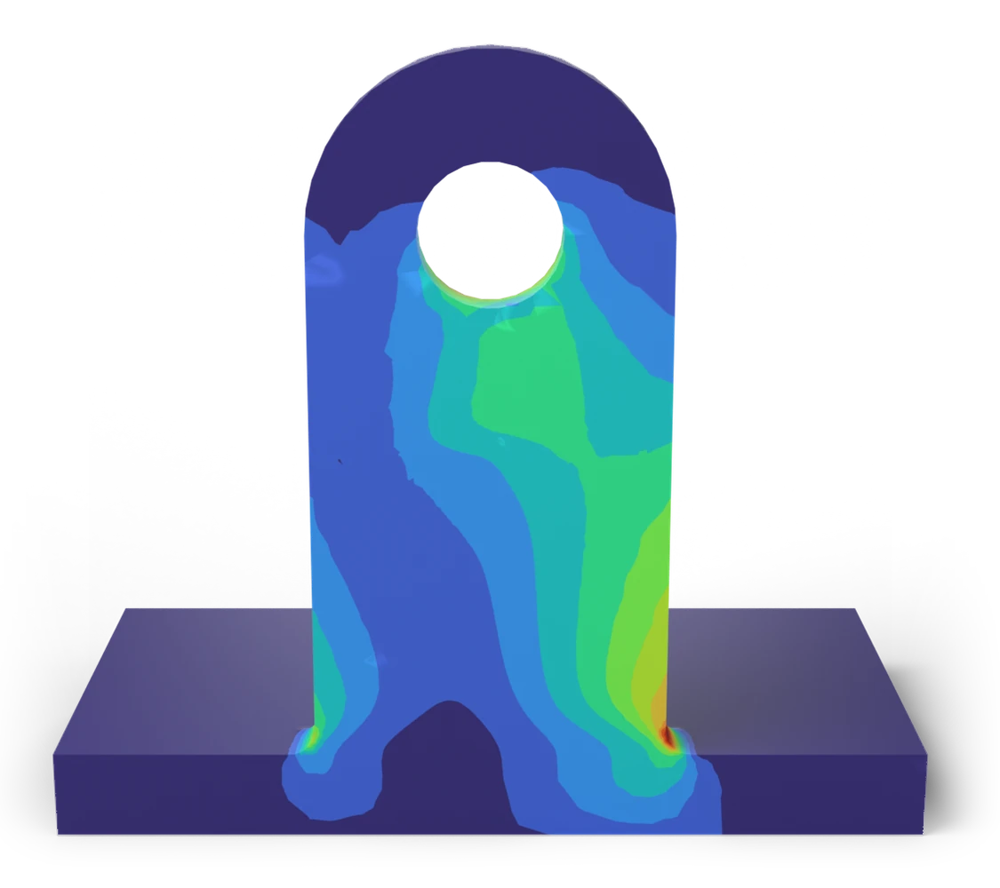

The Question
A machined aluminium clevis bracket on a vibrating machine carries an inclined 4.8 kN pin load. The parts around it fix the base, the lug outline and the fillets. An optimiser run by the agent picks the lug thickness, the gusset thickness and the gusset height to make the bracket as light as possible. The peak stress has to stay at or under 100 MPa, a fatigue rating, and the pin can move at most 0.10 mm. Every design it tries is built, meshed, solved and checked like any other study.
The Answer
- Mass of the chosen design
- 372 g
- Designs tried
- 78
- Peak stress
- 98.3 MPa
- Pin deflection
- 0.079 mm
4 % lighter than the starting design. The 270 g base plate is fixed, so the parts the optimiser could change lost 13 %.
Over three optimisation runs. The checks threw out the answers of the first two.
At the fillet where the lug meets the base, on the finest mesh. With the mesh uncertainty added it's 98.9 MPa, still under 100.
Against the 0.10 mm limit. Stress governs this design, not stiffness.
Turn the result over in 3D in the viewer at the top of the page. Further down, a slider wipes between the starting design and the chosen one on the same stress scale.
The Model
- Part
- A machined clevis bracket: a 100 × 100 × 10 mm base, a 40 mm wide lug standing on it with a 16 mm pin hole 70 mm up, two gussets bracing the lug, and 3 mm fillets.
- Material
- 6061-T6 aluminium, linear elastic: Young's modulus 68.9 GPa, Poisson's ratio 0.33, density 2700 kg/m³, yield 276 MPa.
- Load
- 4.8 kN on the pin, inclined: 1.5 kN along the base, 1.0 kN sideways and 4.5 kN upward. It's applied through a rigid pin tied to the hole surface.
- Support
- The bottom face of the base is fixed, standing in for a bolted and dowelled mounting on a rigid frame.
- What the optimiser can change
- Three dimensions: the lug thickness, the gusset thickness and the gusset height. It starts from 12, 8 and 40 mm and ends at 10.2, 9.1 and 36.4 mm.
- Limits
- Peak von Mises stress at most 100 MPa and pin deflection at most 0.10 mm, with 2.5 % held back for mesh error during the search.
- Mesh
- Quadratic tetrahedra, 4 mm overall and 1 mm on the fillets. The chosen design is solved again with fillet elements of 1.0, 0.85 and 0.75 mm.
- Analysis
- Linear static in CalculiX 2.22, driven by the COBYLA optimiser from SciPy.
The case file: recorded assumptions, limits and inputs
This is the study's own record, written before the run and saved with it, in the shorthand of the case file.
Lightest 6061-T6 machined clevis bracket (base 100 x 100 x 10 mm, lug 40 mm wide with a 16 mm pin at 70 mm, two gussets, 3 mm fillets) under a (1.5, 1.0, 4.5) kN pin load, with peak von Mises at most 100 MPa and pin deflection at most 0.10 mm; COBYLA over lug thickness, gusset thickness and gusset height, each candidate built in CadQuery, meshed in Gmsh, solved and checked in CalculiX.
Assumptions, and How Each Is Checked
- Base bottom face fixed (bolted and dowelled to a rigid machine frame); the bottom half of the base is not assessed (the edge of a fixed face is singular, and the real joint is not modelled).
- Pin load through a rigid pin tied to the hole surface; a ring of one pin diameter around the hole is not assessed (pin bearing and lug net section are sized by the standard lug method).
- Linear elastic 6061-T6 (E 68.9 GPa, nu 0.33); checked: peak stress below yield.
- Small deflection; checked: pin deflection / pin height below 1 %.
- Stress allowable 100 MPa (fatigue-rated) and pin deflection limit 0.10 mm: synthetic.
Limits
- Static load only; the fatigue rating is folded into the allowable.
- No closed-form reference for the whole part: the evidence is exact equilibrium, geometry fidelity, a model-form check of the lug section and mesh convergence at the optimum.
- Fixed outline and fillet radius; only three dimensions vary.
- No physical test data.
Inputs
| Input | Value |
|---|---|
| base_length_mm | 100 |
| base_width_mm | 100 |
| base_thickness_mm | 10 |
| lug_radius_mm | 20 |
| pin_height_mm | 70 |
| pin_diameter_mm | 16 |
| lug_thickness_mm | 12 |
| gusset_thickness_mm | 8 |
| gusset_height_mm | 40 |
| gusset_aspect | 0.7 |
| fillet_radius_mm | 3 |
| youngs_modulus_MPa | 68900 |
| poisson_ratio | 0.33 |
| density_t_per_mm3 | 2.7e-09 |
| yield_strength_MPa | 276 |
| load_x_N | 1500 |
| load_y_N | 1000 |
| load_z_N | 4500 |
| element_size_mm | 4 |
| fillet_element_size_mm | 1 |
Why It Matters
This is the study that shows what the rest of the site is for. A model that one person runs once and inspects by eye is useful. A model that can be run 78 times by an AI agent, with nobody watching each result, and still be trusted at the end is a different kind of tool, and it's only possible if the checks are strong enough to catch a wrong answer on their own.
An optimiser is a hard test of that, because it actively hunts for weaknesses. If a coarse mesh makes a thin design look stronger than it is, the optimiser will find that design and choose it. Here it did exactly that, twice, and the checks threw out both answers. The third answer is the one on this page.
How It Works

The Loop, Step by Step
- ProposeCOBYLA, an optimiser that needs no gradients and handles limits, picks the three dimensions.
- BuildCadQuery draws the solid and exports a STEP file. Gmsh meshes it with quadratic tetrahedra, 4 mm overall and 1 mm on the fillets.
- SolveCalculiX computes the stresses and the pin deflection, with the load applied through the pin and the base held.
- CheckThe study's full set of checks runs. A design that fails any of them counts as infeasible, whatever its numbers say.
- RepeatThe optimiser steps toward lighter designs that pass until its step can't shrink any further. Each run is one command.
- Rejected designs can't steer the search
- 2.5 % margin kept for mesh error
- Predictions written before every run

 Start · 387.7 g · peak 88.9 MPaDesign D · 372.0 g · peak 97.4 MPa
Start · 387.7 g · peak 88.9 MPaDesign D · 372.0 g · peak 97.4 MPa


What I Caught Along the Way
The First Answer Failed Its Own Mesh Study
With a 1 % margin, the optimiser's pick read 94 MPa on its mesh. The mesh study put it at 101.7 MPa once the uncertainty was included. A peak in a fillet needs far more room than a smooth bending stress, where 0.5 % had been plenty.
The Second Answer Failed Too
Gmsh held the fillet elements at about 1.6 mm whatever the overall element size, so the "global" mesh study barely touched the peak, and the margin sized from it failed as well. The final mesh study refines the fillet itself, from 1.0 to 0.75 mm.
A Model That Wasn't Repeatable
The same three dimensions gave 40 or 41 faces from run to run, so different meshes and different stresses: 94.0 against 94.9 MPa. CadQuery was ordering the fillet edges by memory address. They now go in a fixed order, and a test checks that two builds are byte-identical.
How I Checked It
- No closed form covers this shape, so every candidate is checked by what has to hold exactly. The CAD solid is valid. The meshed volume equals the CAD volume to 2 × 10⁻⁴. The base reactions balance the pin load in force and moment to 10⁻⁸, so the load acts where it should. Where the lug has a clear section, its stress is compared with beam theory. The stress stays below yield and the deflection small.
- Design D has its own mesh study, refining the peak itself: fillet elements of 1.0, 0.85 and 0.75 mm. The peak moves 0.99 %, less than the 1.5 % mesh noise I measured beforehand, so it counts as converged, with 0.62 % uncertainty. The requirement holds with that added: 98.9 MPa against 100.
- Gmsh occasionally turned an element inside out when curving the quadratic tetrahedra, which CalculiX rejects. The pipeline now remeshes once with Gmsh's high-order optimiser. It fired on 8 of 21 candidates in one run, and every one then solved.
- I wrote down predictions before every run, and each one is marked held or failed in the case files.
Limits
The load is static, with the fatigue rating folded into the 100 MPa allowable. Only three dimensions vary; the outline and the fillet radius are fixed. The base is held rigidly and the pin is rigid, so the bottom of the base and a ring around the hole aren't assessed: the bolted base and the pin bearing need their own checks, and the lug is sized by the standard lug method. The same loop first optimised study 1's cantilever as a linear taper; that study is study 1b, in the cantilever report.